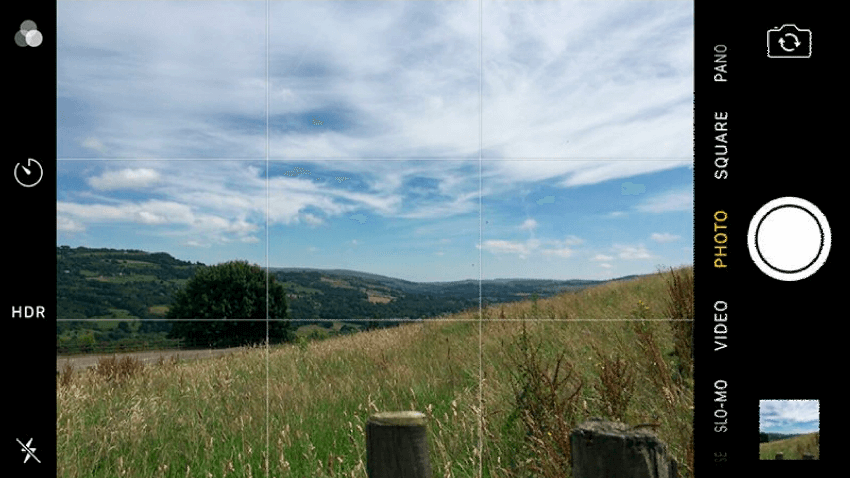

Configuración de la cámara. Cuando la cámara se configure tendrá que tener los valores, tal como se muestra en las imágenes a continuación.
Una vez que nos hemos asegurado que la cámara está configurada con 8 megapíxeles, tiene activada la cuadrícula y se ha programado que guarde las fotos automáticamente en la tarjeta de memoria externa, procedemos con la configuración del modo de la cámara:
Instrucciones prácticas para asegurar fotografías de calidad.
Nunca usar Zoom.
Si el objetivo a capturar está lejos, no use el zoom para acercar la imagen. Lo correcto es acercarse al objetivo para asegurar que la imagen no se distorsione.
Posicionar la cámara a la altura del objetivo:
Si el niño o la niña no están a nivel de la cámara, debemos de asegurarnos de tomar una postura que nivele la posición del lente de la cámara con el cuerpo del objetivo a capturar, toma en cuenta que si el lente está por encima del cuerpo (aunque sea levemente) tendrá una sensación de “vista de pájaro” y si está por debajo (aunque sea levemente) tendrá la sensación de “vista de gusano”.

Cuidar la iluminación.
Cuando vayas a tomar una fotografía toma en cuenta la posición del sol para que no afecte la calidad de la foto. El sol siempre debe estar en la espalda del fotógrafo y nunca en la espalda del objetivo a fotografiar. Toma en cuenta que si posicionas el lente de la cámara frente al sol, inmediatamente este tornará oscura a la imagen.
Centra la imagen.
Una imagen que no está centrada, pierde la perspectiva, es decir, si está muy a la derecha o la izquierda o arriba o abajo, pierde el enfoque principal que es el niño o la niña. Cuida siempre la simetría en las fotografías para asegurar que el primer plano le pertenezca siempre al objetivo a fotografiar.
Elegir el horario idóneo.
El horario en el que tomas las fotografías influye en la calidad de las mismas, dependiendo la hora en la que captures la imagen, habrá mucha o poca luz, evita tomar las fotografías en la noche dado que obligatoriamente tendrás que usar el flash y con seguridad la imagen tendrá un fondo oscuro. Si la tomas exactamente al medio día el sol estará justo sobre la cabeza del fotógrafo y del fotografiado, lo que te dificultará capturar una imagen de alta calidad.
Controla el uso del flash.
La luz artificial o flash puede ayudar a capturar una buena fotografía en espacios con iluminación deficiente; sin embargo, si haces un uso indiscriminado del mismo, es posible que disminuya la calidad de fotografías en ambientes con buena iluminación. Por tanto, se trata de estar pendiente de activarlo o desactivarlo, según lo requiera cada situación.
Captura varias imágenes.
A menos que seas un o una profesional de la fotografías, es recomendable que captures más de una imagen por objetivo, así tendrás la oportunidad de elegir entre varias opciones, hasta que se obtenga la correcta, con esta acción no solo aseguras que no tendrás que regresar a la comunidad a buscar nuevamente al niño o niña auspiciada, sino que aseguras el primer filtro de calidad.
Otras consideraciones.
En la búsqueda interminable de la mejor fotografía móvil posible, puede que sientas la tentación de olvidarte de la aplicación de cámara que viene por defecto en tu Smartphone y así usar algo más exótico y avanzado. Sin embargo, si sabes lo que estás haciendo podrás obtener fotografías de gran calidad usando simplemente la app que trae tu iPhone o Android. Y aquí te explicamos cómo.
Encuentra una base de soporte
Para muchas fotos tomadas con el móvil es básico contar con una mano firme, particularmente en situaciones de poca luz donde el móvil va a luchar para poder capturar la mayor cantidad de luz posible en su lente.

Cambia tu enfoque
Ya sea que uses un iPhone o un móvil Android podrás tocar en cualquier sitio de la pantalla para cambiar el lugar donde se centra el enfoque de la foto. Esto también cambiará el nivel de exposición para que sea acorde al lugar que has seleccionado, por lo que es una manera bastante útil de iluminar una zona oscura (u oscurecer una muy brillante).
Usa el botón físico para capturar fotos
Y hablando de mantener la cámara de tu móvil firme, intentar sostener tu móvil en un sitio para después presionar un botón digital en el medio de la pantalla no es nada sencillo, y puede ocasionar que tu móvil se mueva justo en ese momento en el que estabas capturando la foto.
br>Aplica el modo HDR de forma automática
Las últimas versiones de las aplicaciones de cámara en iOS y Android incluyen un modo HDR que se aplica un filtro de alto rango dinámico cuando la situación lo requiere. Puedes ver un botón en la pantalla para activar este sistema en la pantalla de cualquiera de los dos sistemas operativos.

Aprovecha la luz natural lo más que puedas.
Si hay algo elemental para una foto es que tus objetos o sujetos se vean bien, por lo que tienes que estar muy atento de las fuentes de luz con las que cuentas, recuerda que lo ideal es que sea luz solar.
Limpia el lente.
No olvidemos uno de los aspectos más básicos de tomar fotos con tu móvil (o cualquier cámara, si a eso vamos): cualquier mancha por más pequeña que sea en el lente de la cámara va a interferir con tu foto de una forma realmente notable, por lo que es más que recomendable que mantengas esta parte de tu smartphone lo más limpia que puedas.